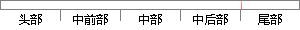

图4-29 内存控制块的定义
片段位置图

相似结果
相似片段： 虚拟内存设置中的自定义大小和系统管理大小的含义?我应怎样设置虚拟内存? 2007-4-29 虚拟内存中的“系统管理的大小”和“无分页文件”分别是什么意思 2008...
| 标题 | 《虚拟内存设置中的“系统管理的大小”是什么意思_百度知道》 |
| 对比库 | PaperRater云论文库 |
| 网址 | http://zhidao.baidu.com/link?url=HL-gcBCH1ENOjFsn_r1aXcligjh3HMX9Qjij5dKs5vGDxVv1SgPf2okGR0Uvt7gJXE0QxE1-j2bfFqINtE7LAq |
| 相似率 | 80% （严重抄袭） |
※ 片段修改建议 ※
近似词参考：- 控制：节制
- 定义：界说
系统自动生成语句：图4-29 内存节制块的界说
注：本片段修改建议为系统自动生成，仅供参考。